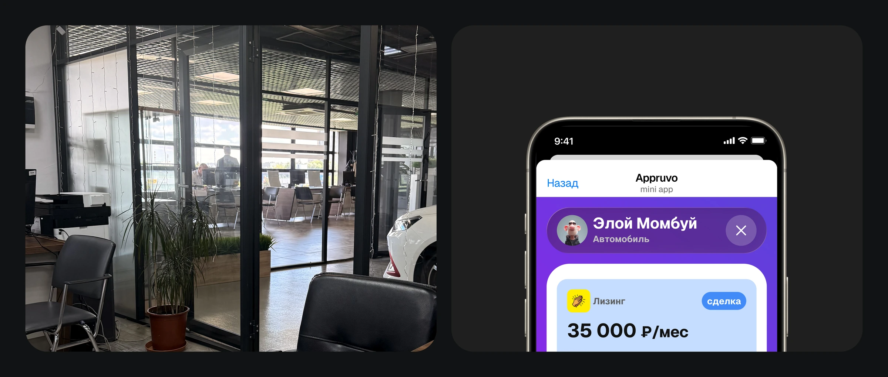
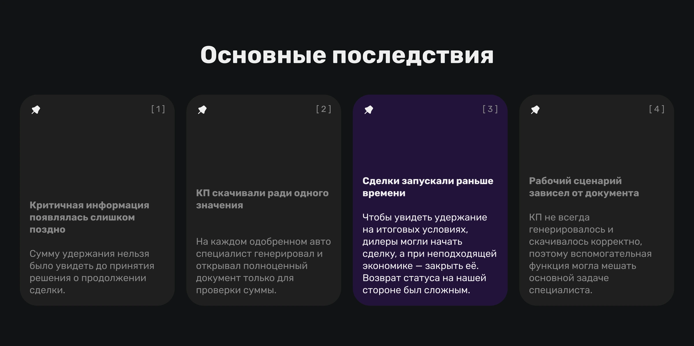
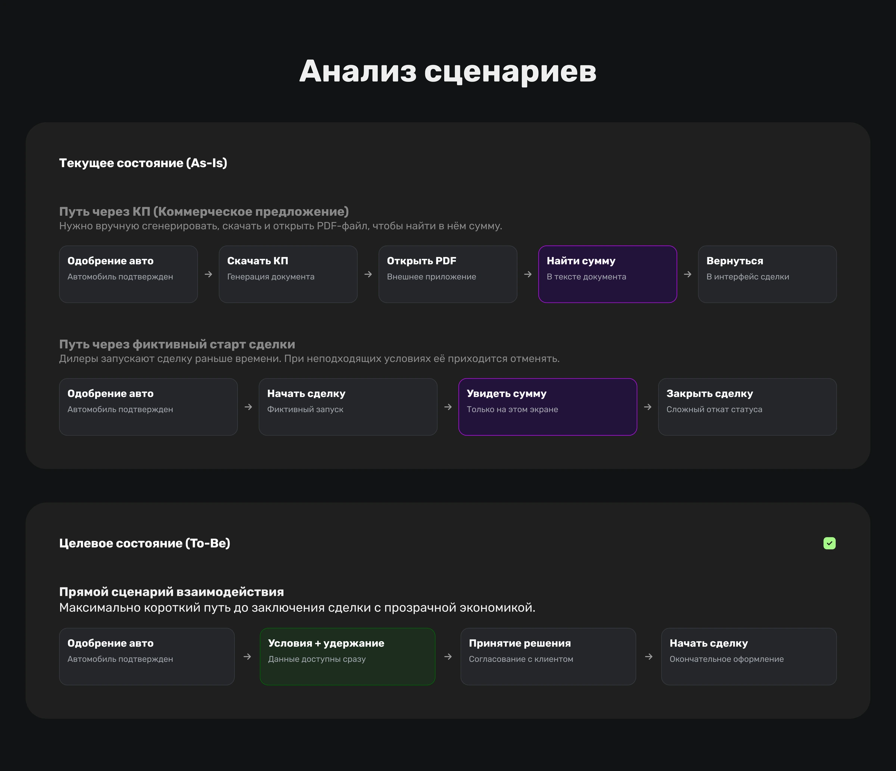
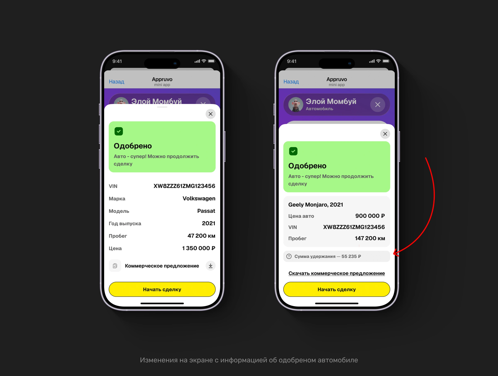
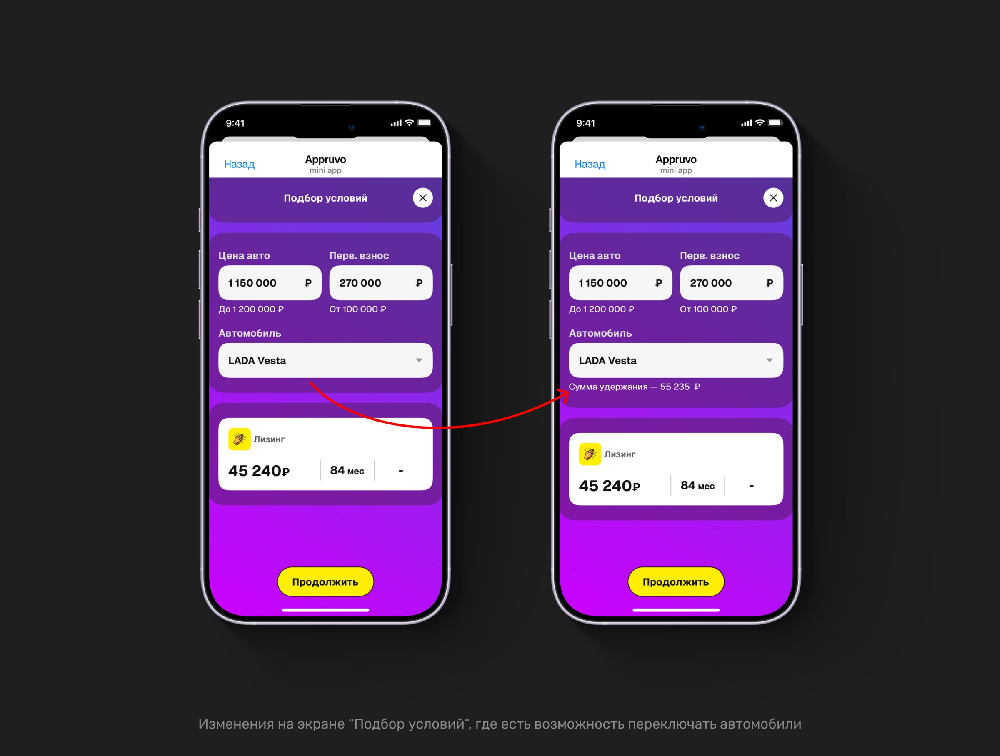
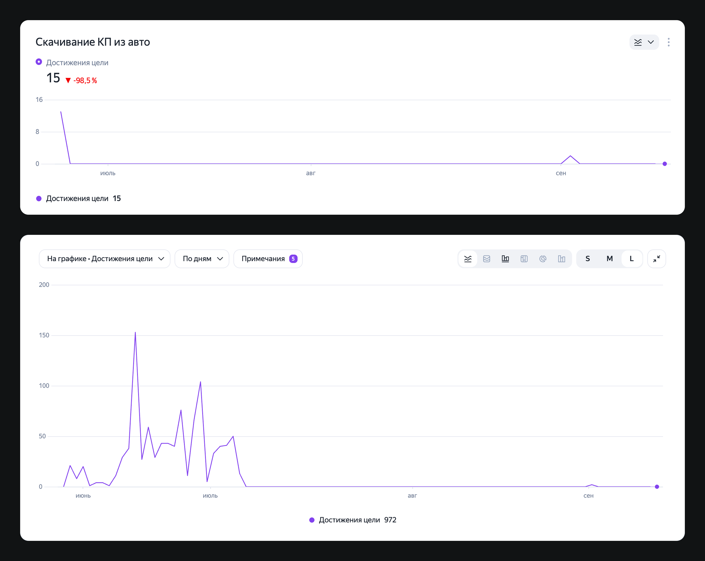

Appruvo
Product Designer · 2025 - по н.в.
После введения удержания с дилера мы заметили новое поведение: специалисты стали запускать сделки, а затем просить их отменить. Во время полевого исследования я увидела ещё один повторяющийся обходной сценарий и начала разбираться в его причинах.
Выяснилось, что оба действия решали одну проблему — специалистам не хватало важной информации до старта сделки. Мы перенесли её в нужный момент сценария: после релиза один обходной сценарий сократился на 98,5%, а количество сделок, запущенных только ради просмотра условий, снизилось с 15–20 до 2–3 в месяц.
Я наблюдала полный процесс сделки в дилерском центре — от первого обращения клиента до выдачи автомобиля, чтобы увидеть, как сотрудники реально работают с системой на каждом этапе.
В процессе заметила повторяющийся паттерн: почти для каждого одобренного автомобиля кредитный специалист скачивал коммерческое предложение.
При этом документ не печатали, не передавали клиенту и часто закрывали сразу после просмотра. Это выглядело как обходной шаг, поэтому я решила разобраться, какую информацию специалисты там ищут и почему её не хватает в основном сценарии.

В разговоре со специалистами выяснилось, что сам документ им в этот момент не нужен. Внутри они искали сумму удержания с дилера — она могла зависеть от возраста автомобиля, перепробега или отклонения его стоимости от рыночной.
Эта механика появилась в продукте недавно и заметно изменила поведение пользователей. Размер удержания влиял на экономику сделки: зная его заранее, специалист мог определить, какой объём дополнительных услуг можно включить в продажу и стоит ли продолжать оформление на текущих условиях.
Но посмотреть удержание непосредственно в интерфейсе до старта сделки было нельзя. Оно становилось доступно либо в отдельном документе, либо уже на итоговых условиях после начала сделки.
Когда я начала разбираться в проблеме вместе с коллегами, выяснилось, что скачивание документа было не единственным обходным путём. После появления удержания специалисты стали запускать часть сделок просто для того, чтобы посмотреть итоговые условия, а затем, если экономика их не устраивала, просили отменить сделку.
Это было заметно и по работе поддержки. Вместе с коллегами мы уточняли причины таких отмен и увидели повторяющийся паттерн: примерно 15–20 сделок в месяц запускались не для продолжения оформления, а только ради просмотра условий.
Получалось, что одна недоступная вовремя информация породила сразу два обходных сценария: открыть отдельный документ или фактически начать сделку, чтобы просто посмотреть нужное значение.
Проблема оказалась шире одного лишнего действия.
После появления новой финансовой механики у специалистов возникла новая информационная потребность, но основной сценарий продукта её не закрывал. Сумма удержания влияла на решение о продолжении сделки, но становилась доступна уже после того, как это решение требовалось принять.
Из-за этого специалисты:
- скачивали отдельный документ ради одного значения;
- преждевременно запускали сделку только для просмотра итоговых условий;
- обращались в поддержку за отменой, если после просмотра решали не продолжать оформление.
В результате поздняя доступность одного параметра создавала лишние действия не только для пользователя, но и для команды: в системе появлялись сделки без реального намерения продолжать оформление, а поддержке приходилось разбираться в причинах их отмены.

Дать специалисту всю информацию для оценки экономики автомобиля до старта сделки, чтобы он мог принять решение о продолжении оформления без обходных действий.
Для этого нужно было встроить сумму удержания в основной сценарий работы с автомобилем — именно туда, где специалист сравнивает условия и решает, запускать сделку или нет.
Вместе с командой мы определили момент, когда специалисту действительно нужна сумма удержания: до старта сделки, во время оценки её экономики.

Поэтому я предложила показывать удержание рядом с условиями автомобиля — в том же контексте, где сотрудник уже сравнивает ключевые параметры и принимает решение.
Мы не стали создавать отдельный экран или новый сценарий. Проблема была не в отсутствии функции, а в том, что уже существующие данные становились доступны слишком поздно.
Небольшое изменение интерфейса заменило два обходных пути одним прямым сценарием:
посмотреть условия автомобиля → оценить экономику → принять решение → начать сделку.
Теперь специалисту больше не нужно было скачивать документ или менять состояние сделки в системе только ради просмотра одного значения.


После того как сумма удержания появилась рядом с условиями автомобиля, скачивания документа как обходной сценарий сократились на 98,5%.

Я отдельно проверила оставшиеся единичные скачивания. В этих случаях документ использовали уже по прямому назначению — для разбора спорных ситуаций по сделкам.
Изменился и второй сценарий. До релиза примерно 15–20 сделок в месяц запускались только для просмотра условий и затем требовали отмены. После изменения интерфейса таких случаев осталось 2–3 в месяц, а при проверке выяснилось, что они были связаны уже с другими причинами, а не с невозможностью заранее посмотреть удержание.
Это подтвердило исходную гипотезу: пользователям не нужен был ни отдельный документ, ни преждевременный старт сделки — им нужна была конкретная информация в правильный момент принятия решения.
Для бизнеса: устранили причину преждевременного запуска сделок, сократили количество связанных с этим отмен и ручной работы поддержки, а основной сценарий перестал зависеть от вспомогательного документа.
Все права на продукт и визуальные материалы принадлежат ООО "Аппруво Тек" (ИНН 9725174804). Проект опубликован с целью демонстрации дизайнерских решений.